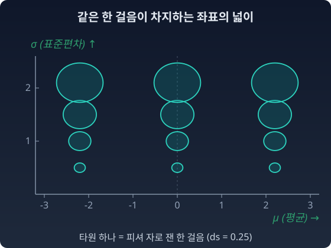
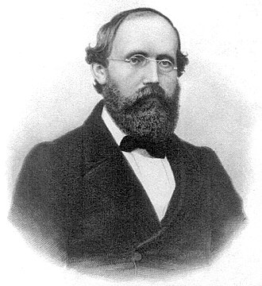

KL 발산(두 분포가 얼마나 다른지 재는 비대칭의 양)은 멀리 떨어진 두 분포도 한 번에 비교한다. 그런데 매니폴드 위를 걸어가면서 한 걸음 한 걸음의 크기를 재려면? 좌표의 한 칸은 어디서나 같은 거리일까?
등산 지도의 등고선 — 지도 위 1cm의 실제 거리
등산 지도에서 등고선이 빽빽한 곳은 경사가 급하다. 지도 위에서 1cm를 가는 동안 땅 위로는 비탈을 따라 더 먼 길을 걷는다. 등고선이 성긴 곳은 완만하다. 지도 위 1cm가 땅 위 거리와 거의 같다. 같은 "지도 위 1cm"인데 실제 거리가 다르다.
그러니까 등산 지도를 제대로 읽으려면 각 지점에서 "여기서의 1cm는 실제로 몇 미터인가"를 알아야 한다. 그 정보가 등고선 간격에 들어 있다.
세계지도도 같다. 메르카토르 지도에서는 적도의 원과 극지방의 원이 지구 위에서 같은 크기인데, 지도 위에서는 극으로 갈수록 크게 그려진다. 지도 위 한 칸이 땅 위에서 얼마인지가 위도마다 다르다.
메르카토르 도법의 왜곡 — 적도의 원과 극지방의 원이 같은 크기인데 지도에서는 다르다
파라미터 공간도 마찬가지다. θ를 0.01만큼 바꾸는 것이 어떤 곳에서는 분포를 확 바꾸고 어떤 곳에서는 거의 안 바꾼다. "좌표 지도의 등고선 간격"을 알아야 한 걸음의 진짜 크기를 알 수 있다.
이 자의 그림자는 KL 발산에 이미 있다. KL 발산을 무한히 가까운 두 점 사이에서 전개하면 대칭적인 이차형식(dθᵀ A dθ 꼴)이 되고, 그 이차형식을 만드는 행렬 A가 피셔 정보 행렬이다. 피셔 정보 행렬이 바로 이 "국소적 자"다. 각 지점에서 "한 걸음이 분포를 얼마나 바꾸는가"를 알려주는 행렬. 수학은 이런 국소적 자를 계량(metric)이라 부른다.
자를 식으로 쓰면
좌표 u¹, u², … 를 조금씩 움직일 때 실제 거리 ds는 이렇게 잰다. 좌표에 흔히 쓰는 x 대신 u 로 적는 것은 이 책에서 x 가 데이터(관측값)를 가리키기 때문이다. u 위에 붙은 작은 숫자와 글자(u¹, ui)는 거듭제곱이 아니라 몇 번째 좌표인지 알리는 번호다. ds(디에스)는 d 곱하기 s가 아니라 「작은 한 걸음의 길이」를 뜻하는 한 덩어리 기호이고, ds²의 2만 제곱이다.
지도 위에서 같은 du라도 g가 크면 실제 걸음은 크고, g가 작으면 실제 걸음은 작다. 등고선 간격이 곧 g다. 그리고 이 자는 한 공간에 하나다. 확률분포의 공간에는 피셔 계량이라는 자 하나가 자연스럽게 놓인다.
정규분포족의 자
평균 μ와 표준편차 σ로 정해지는 정규분포들의 모임에서 이 자를 직접 적어 보자. 두 정규분포 사이의 KL 발산을 아주 가까운 두 점에서 전개하면 다음 자가 나온다.
ds2=σ2dμ2+2dσ2
μσds평균 (좌표)표준편차 (좌표)피셔자로잰한걸음
분모에 σ²이 있다. σ가 크면 같은 dμ도 작은 걸음이다. 퍼진 분포 둘은 평균이 조금 달라도 서로 잘 구별되지 않기 때문이다. 아래 그림의 타원 하나하나는 피셔 자로 같은 한 걸음이 좌표 평면에서 차지하는 자리다. 메르카토르 지도에서 같은 크기의 원이 위도에 따라 달리 그려지듯, 같은 한 걸음이 σ에 따라 다른 크기로 그려진다.

정규분포족의 (μ, σ) 평면에 그린, 피셔 자로 같은 한 걸음(ds = 0.25)의 타원들. σ가 커질수록 타원이 커지고, 가로(μ 방향) 반지름은 세로(σ 방향) 반지름의 √2배다
경로의 길이 — 모양과 걸음의 비용
두 분포를 잇는 길에는 덧셈의 길(확률을 섞는 길)과 곱셈의 길(로그를 섞은 뒤 합이 1이 되게 다시 나누는 길, 곧 정규화하는 길)이 있었다. 두 길의 "길이"를 비교하고 싶다면? 그러려면 각 지점에서 한 걸음의 크기를 알아야 한다. 같은 두 점 사이를 걸어가는데 경로의 길이가 다른 이유는 두 가지다. 첫째, 경로의 모양이 다르다. 둘째, 걷는 곳마다 한 걸음의 "비용"이 다르다(이 절에서 보는 것). 자(ruler)가 있어야 경로의 길이를 잴 수 있고, 길이를 알아야 "더 짧은 길"을 물을 수 있다. 가장 짧은 길을 측지선(geodesic)이라 부른다.
측지선 — 자가 결정하는 “가장 짧은 길”
평면에서 두 점 사이의 가장 짧은 길은 직선이다. 곡면에서는? 평면의 직선이 없다. 대신 "가능한 모든 경로 중에서 길이가 가장 짧은 것"을 고른다.
지구 위에서 서울과 뉴욕을 잇는 가장 짧은 경로는 첫 절에서 잰 대원(지구 중심을 지나는 큰 원. 길이 11,052 km로, 위경도 지도 위의 곧은 선 13,716 km보다 짧았다)이다. 북쪽으로 크게 돌아가는 길이 오히려 짧았다.
가장 짧은 길은 자(계량)가 정한다. 같은 좌표 위에서도 자를 바꾸면 가장 짧은 길이 달라진다. 유클리드 자를 쓰면 직선이 가장 짧다. 피셔 자를 쓰면 다른 곡선이 가장 짧다.
정규분포족의 (μ, σ) 평면에서도 그렇다. 피셔 자 아래에서 두 정규분포를 잇는 가장 짧은 길은 좌표 위의 직선이 아니다. "좌표에서 가까운 것"과 "분포로서 가까운 것"이 다르기 때문이다. 어느 쪽으로 돌아가는 길이 더 짧은지는 아래 문제에서 직접 잰다.
그러면 앞에서 말한 두 길, 덧셈의 길과 곱셈의 길은 무엇인가? 이 둘은 피셔 자로 잰 가장 짧은 길이 아니다. 자는 하나이고, 그 자가 정하는 가장 짧은 길도 하나다. 두 길은 다른 종류의 "곧음"을 따른다. 길이를 줄이는 대신, 방향을 바꾸지 않고 곧게 나아가는 길. 무엇을 "방향을 바꾸지 않는다"고 부를지 정하는 규칙이 따로 있고, 그 규칙이 둘이어서 곧은 길도 둘이다. 이 장 뒤쪽의 두 절에서 그 규칙, 접속(connection)을 만난다.
지금은 한 가지만 기억하자: 자는 하나다. 자가 가장 짧은 길을 정한다. 정보기하학에서 "둘"인 것은 자가 아니라 곧음의 규칙이다.
볼록성이 주는 자 — 그릇이 오므라드는 정도
지수족의 로그정규화자 F(θ)(분포의 합이 1이 되게 나누는 수의 로그)는 볼록함수, 곧 "그릇"이다. 그릇이 얼마나 가파르게 오므라드는지(두 번 미분한 값)는 어디서나 같은가? 바닥이 넓은 그릇과 바닥이 좁은 그릇이 다르듯, F(θ)를 두 번 미분한 값도 θ에 따라 다르다. 그리고 F(θ)를 두 번 미분한 행렬(헤시안)이 바로 θ 좌표의 자, 곧 피셔 정보 행렬이다. 한 가지만 미리 짚자. 그릇이 오므라드는 정도는 자의 눈금이지, 공간의 곡률이 아니다. 둘을 가르는 것이 다음 절이다.
파이썬
정규분포의 (μ, σ) 공간에서 μ를 똑같이 0.1씩 옮긴다. σ = 0.5 근처와 σ = 5 근처에서 KL 발산이 얼마나 다른지 본다.
import numpy as np
def kl_gauss(m1, s1, m2, s2):
return np.log(s2 / s1) + (s1**2 + (m1 - m2)**2) / (2 * s2**2) - 0.5
for s in [0.5, 5.0]:
print(f"σ = {s}: Δμ = 0.1 이 만드는 KL = {kl_gauss(0, s, 0.1, s):.5f}")
# σ = 0.5: Δμ = 0.1 이 만드는 KL = 0.02000
# σ = 5.0: Δμ = 0.1 이 만드는 KL = 0.00020
같은 좌표 한 칸인데 KL이 100배 다르다. KL은 (Δμ)²/(2σ²)이니, σ가 10배 커지면 100배 작아진다. 위 자로 잰 ds²의 절반과 같은 값이다. “좌표의 한 칸이 어디서나 같은 거리가 아니다.”
ML에서: 자연 기울기 — 한 걸음을 어느 자로 재나
경사하강법은 "한 걸음씩 내려가는 것"이다. 한 걸음의 크기를 어떤 자로 재느냐에 따라 "가장 가파른 내리막"의 방향과 보폭이 달라진다. 피셔 자로 잰 같은 크기의 한 걸음 가운데 손실을 가장 많이 줄이는 방향으로 걷는 방법을 자연 기울기(natural gradient)라 부른다. 좌표로 한 걸음을 재는 보통의 경사하강법과 무엇이 달라지는지는 아래 문제 6에서 직접 걸어 본다.
수확
“매니폴드 위에서 한 걸음의 크기를 재려면 자가 필요하다. 자의 눈금은 위치마다 다르다.”
인물 이야기 — 리만, 가우스, 그리고 “기하학의 기초에 대하여”

Bernhard Riemann
1854년 6월 10일, 괴팅겐 대학. 스물일곱 살의 베른하르트 리만(Bernhard Riemann)이 교수 자격을 얻기 위한 시험 강연을 해야 했다. 후보자가 주제 세 개를 내면, 교수진이 그중 하나를 고르는 것이 관례였다. 고르는 사람은 카를 프리드리히 가우스(Carl Friedrich Gauss) — 일흔일곱의 노대가.
리만은 주제 셋을 냈고, 세 번째로 기하학을 적어 넣었다. “기하학의 기초를 이루는 가설에 대하여(Über die Hypothesen, welche der Geometrie zu Grunde liegen).” 앞의 두 주제가 무엇이었는지는 자료마다 다르게 적혀 있다. 리만의 예상과 달리, 가우스는 세 번째인 기하학을 골랐다.
강연에는 수식이 거의 없다. 듣는 사람 가운데 수학자가 아닌 교수들이 많았기 때문이라고 전해진다.
이 강연 한 편이 기하학의 역사를 갈랐다.
리만이 한 일의 핵심은 이것이었다. 유클리드 이래 2000년 동안, 기하학은 "공간이 평평하다"는 가정 위에 서 있었다. 평행선 공리를 의심한 사람들(로바쳅스키(Lobachevsky), 보여이(Bolyai))이 있었지만, 그들은 유클리드를 부정하면서도 여전히 "균일한 곡률"의 공간만 다루었다. 리만은 그 한계마저 깨뜨렸다. 곡률이 점마다 다를 수 있는 공간. 어떤 곳은 평평하고, 어떤 곳은 볼록하고, 어떤 곳은 안장처럼 굽는 공간. 그리고 그런 공간에서 거리를 재려면 — 각 점에서 "여기서의 한 걸음은 이만큼"을 알려주는 계량 텐서(점마다 놓인 대칭 행렬, PyTorch의 tensor와는 이름만 같다)가 필요하다.
이것이 리만 계량이다. 우리가 "자(ruler)가 필요하다"고 했던 것의 정확한 수학적 실체. 그리고 리만의 공간은 처음부터 바깥 공간을 전제하지 않는다.
리만의 아이디어는 가우스가 1827년에 곡면에서 세운 기하학 위에 서 있었다. 가우스가 2차원 곡면에서 한 것을 리만이 임의 차원으로 확장했다. n차원 공간에서 점마다 달라지는 계량. 이것이 리만 기하학이다.
강연이 끝난 뒤 교수 회의에서 돌아가던 가우스는, 뒤에 데데킨트(Richard Dedekind)가 남긴 기록에 따르면, 동료 빌헬름 베버(Wilhelm Weber)에게 리만이 보인 생각의 깊이를 드물게 들뜬 목소리로 크게 칭찬했다.
리만은 1866년, 서른아홉에 결핵으로 죽었다. 그 강연에서 60년쯤 뒤, 아인슈타인이 일반상대론을 쓸 때 필요했던 수학이 바로 리만 기하학이었다. 그리고 1945년, 젊은 라오(C. R. Rao)가 확률분포의 공간에 피셔 정보로 리만 계량을 입혔다. 1980년대에 아마리(Shun’ichi Amari)가 그 위에 여러 접속을 얹어 정보기하학의 틀을 세웠다. 같은 도구가 세 번째 생을 살기 시작했다.
문제 4. 등산 지도 1 cm는 땅 위로 몇 미터인가
축척 1:25,000 등산 지도에 등고선이 높이 10 m마다 그려져 있다. 지도 위 1 cm는 수평으로 250 m다. A 지점에서는 등고선이 지도 위 1 mm 간격으로, B 지점에서는 5 mm 간격으로 그려져 있다. (가) 두 지점에서 등고선에 수직으로, 곧장 비탈을 따라 지도 위 1 cm를 걸으면 땅 위로는 몇 m를 걷는가? (나) 지도 위 한 걸음 dx와 땅 위 한 걸음 ds를 ds² = g·dx²로 쓰면 g는 두 지점에서 각각 얼마인가? (다) 같은 A 지점에서 등고선을 따라 옆으로 걸으면 g는 얼마인가?
직각삼각형이요. 걸은 길은 빗변이니까 더하는 게 아니라 √(250² + 100²) ≈ 269.3 m네요. B는 5 mm마다 10 m니까 1 cm에 20 m 올라서 √(250² + 20²) ≈ 250.8 m고요.
이서연
(나)는 기울기로 쓰면 돼요. A는 수평 25 m에 10 m를 오르니까 기울기 0.4, g = 1 + 0.4² = 1.16. B는 기울기 0.08이라 g = 1.0064. 같은 dx인데 g가 곳마다 달라요.
선생님
(다)는요? A 지점 그대로예요.
이서연
등고선을 따라가면 높이가 안 바뀌니까 g = 1이에요. 같은 A 지점인데 방향에 따라 g가 달라요. 그러니까 한 점의 자는 숫자 하나가 아니라 방향마다 값을 주는 행렬이어야 해요. 본문의 gij가 행렬인 까닭이 이거네요.
김민준
지도 위 거리로 예상 소요 시간을 짜면 안 되는 거였네요. 조별 과제 분량을 쪽수로만 나누면 그림 많은 쪽을 받은 사람이 손해 보는 거랑 같아요.
문제 5. 돌아가는 길이 더 짧다
정규분포족의 피셔 자 ds² = (dμ² + 2dσ²)/σ²에서, A = N(−2, 1²)와 B = N(2, 1²)를 잇는 두 길의 길이를 잰다. (가) σ = 1을 지키며 μ만 −2에서 2로 가는 좌표 직선의 길이는? (나) 먼저 σ를 1에서 s로 올리고, σ = s에서 μ를 −2에서 2로 옮긴 뒤, σ를 다시 1로 내리는 길의 길이 L(s)를 구하고 s = 2일 때 값을 구하라. (다) L(s)가 가장 작아지는 s와 그때의 길이는? 이 결과는 가장 짧은 길의 모양에 대해 무엇을 말하는가?
함께 풀기
김민준
(가)는 σ = 1이니까 ds = dμ, 길이 4예요. (나)는 올라갔다가 내려오는 길이니까 계산하기 전에도 4보다 길 게 뻔하죠. 돌아가는 거잖아요.
선생님
계산하기 전에 뻔한가요? 가로로 가는 구간이 σ = s에서는 얼마예요?
김민준
ds = dμ/s니까 가로 구간은 4/s예요. 세로는 ds = √2 dσ/σ라서 한쪽이 √2 ln s, 오르고 내리니까 2√2 ln s. L(s) = 2√2 ln s + 4/s. s = 2면 2√2 × 0.693 + 2 ≈ 3.96이요.
김민준
어, 4보다 짧아요. 돌아갔는데 짧아졌어요.
이서연
가장 작은 곳은 미분해서 2√2/s − 4/s² = 0, s = √2예요. L(√2) = √2 ln 2 + 2√2 ≈ 3.81. 위로 조금만 올라가서 건너는 게 좋고, 너무 올라가면 오르내리는 비용이 커져요. s = 3이면 4.44로 다시 길어지고요.
선생님
왜 위로 올라가면 가로 비용이 싸질까요?
이서연
σ가 크면 평균이 조금 달라도 두 분포가 잘 안 구별되니까, 거기서의 μ 한 칸은 짧은 걸음이에요. 서울–뉴욕 비행기가 북쪽으로 올라갔다가 건너는 거랑 같은 구조네요. 그리고 모서리가 있는 이 길보다 매끈하게 휜 길이 더 짧을 테니까, 가장 짧은 길은 σ가 큰 쪽으로 불룩한 곡선이겠어요.
선생님
그래요. 좌표 위의 직선이 가장 짧은 길이라는 건 유클리드 자를 쓸 때만 맞아요.
김민준
시험 기간에 도서관까지 큰길로 돌아가는 게 골목으로 곧장 가는 것보다 빠른 거랑 같네요. 지도 위 거리보다 걸음 하나의 비용이 중요했어요.
문제 6. 같은 학습률, 다른 σ
평균 x̄인 데이터에 정규분포 N(μ, σ²)의 μ만 맞춘다. σ는 알려져 있고, 손실은 L(μ) = (μ − x̄)²/(2σ²)이다. 경사하강법 μ ← μ − lr·∂L/∂μ로 학습률 lr(learning rate 의 줄임. l 곱하기 r 이 아니다) = 0.3을 쓴다. (가) σ = 0.5와 σ = 5에서 오차 μ − x̄는 한 걸음마다 몇 배가 되는가? 오차를 처음의 1% 아래로 줄이려면 각각 몇 걸음이 필요한가? (나) lr 하나를 잘 골라 두 경우 모두 빠르게 만들 수 있는가? (다) 기울기에 σ²을 곱해서 걸으면 어떻게 되는가?
(나)는 쉽죠. 느린 쪽에 맞춰 lr을 키우면 돼요. 25쯤이면 σ = 5에서 한 번에 가요.
선생님
그 lr을 σ = 0.5에 넣으면요?
김민준
1 − 25 × 4 = −99배요. 한 걸음마다 오차가 99배로 튀어요. lr = 0.6만 돼도 −1.4배라서 벌어지기 시작하고요. 한쪽에 맞추면 다른 쪽이 망가지네요.
이서연
문제가 lr이 아니라 걸음을 재는 자예요. 좌표로 μ를 0.3만큼 움직이는 게 σ = 0.5에서는 큰 걸음이고 σ = 5에서는 아주 작은 걸음이니까요. 처음 오차가 1일 때 첫 걸음의 KL을 재 보면 σ = 0.5는 μ가 1.2 움직여서 2.88이고, σ = 5는 0.012 움직여서 0.00000288이에요. 100만 배 차이예요.
선생님
그럼 (다)는요?
이서연
기울기에 σ²을 곱하면 걸음이 lr·(μ − x̄)가 돼서 σ가 사라져요. 오차는 두 경우 모두 (1 − lr)배이고, lr = 1이면 한 걸음에 끝나요. σ²은 이 모형에서 μ 방향 피셔 정보 1/σ²의 역수니까, 좌표 대신 피셔 자로 걸음을 잰 거예요. 이게 자연 기울기네요.
선생님
그래요. 보통의 경사하강법은 좌표의 한 칸을 어디서나 같은 걸음으로 보고, 자연 기울기는 분포가 바뀌는 크기로 걸음을 재요. 그래서 좌표를 어떻게 잡든 같은 속도로 내려가요.
김민준
조교님이 과목마다 만점이 다른 점수를 합칠 때 먼저 만점으로 나누라고 한 거랑 같네요. 눈금을 맞추지 않고 같은 비율로 올리면 한 과목만 날뛰어요.